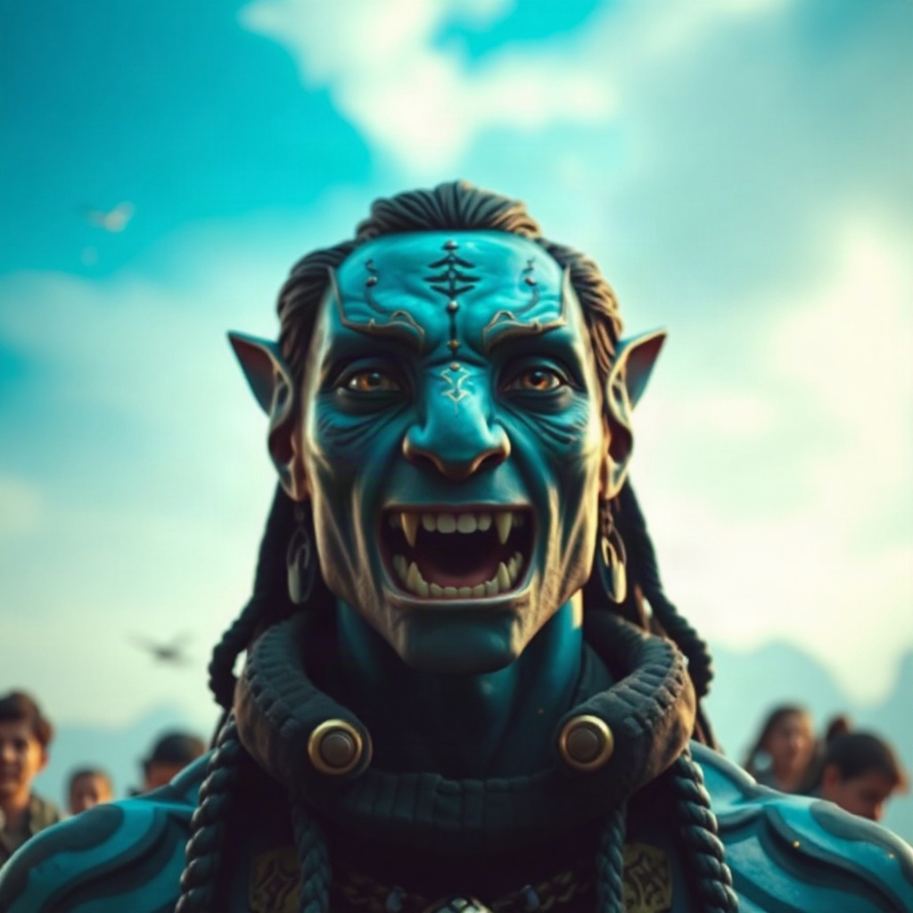
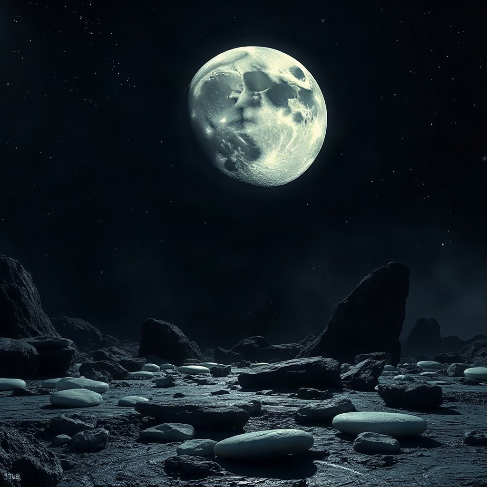
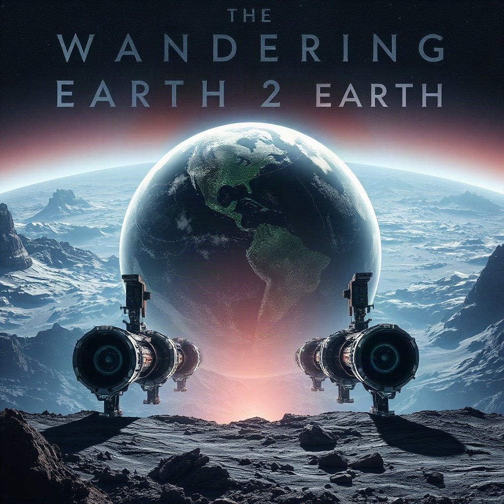
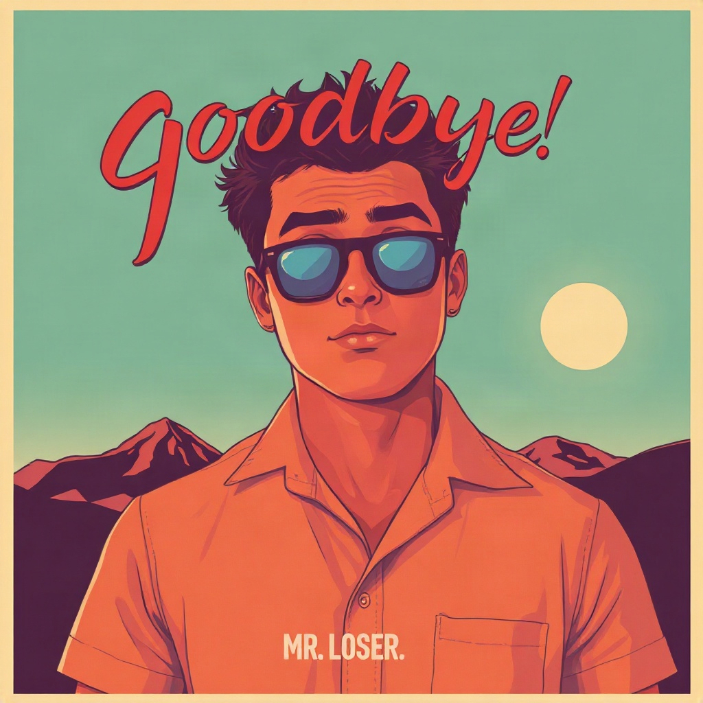
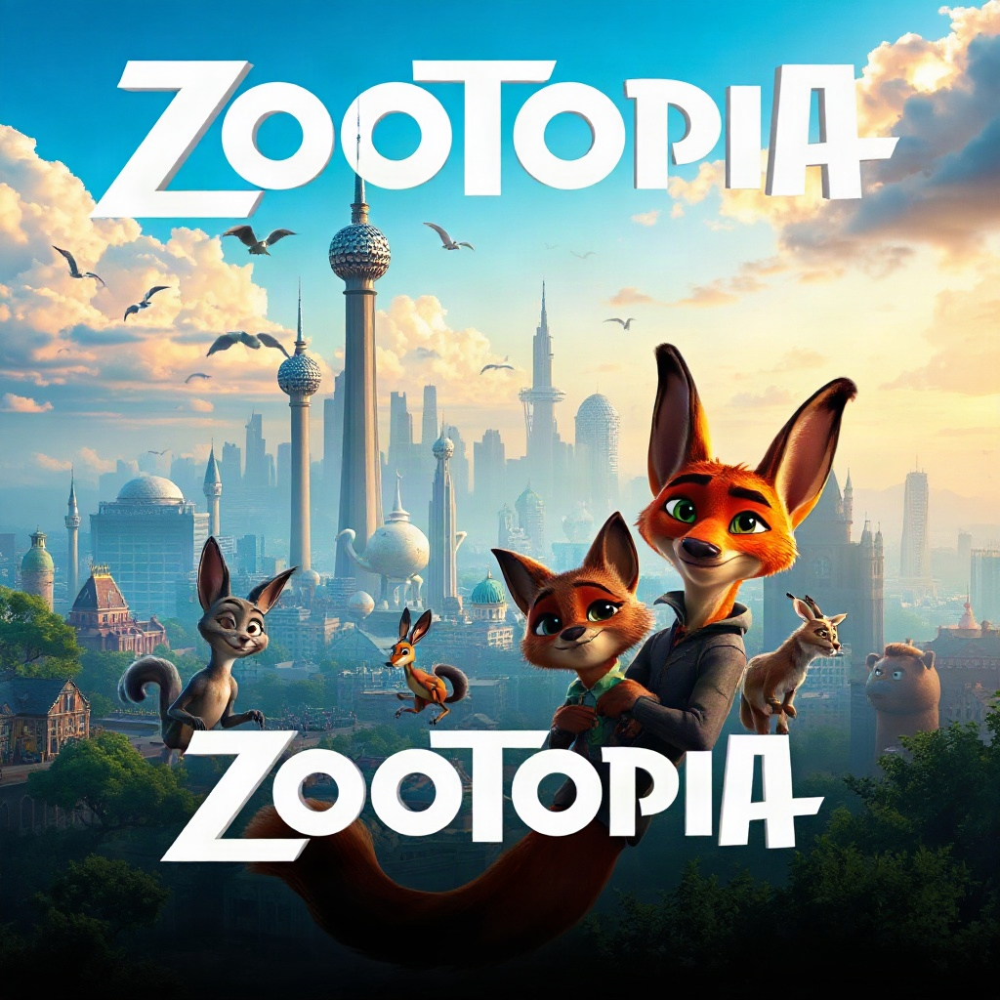

独行月球
7.2
豆瓣评分 · 3.1 万人评分
喜剧
科幻
冒险
1小时56分钟 · 2022 · 中国大陆
剧情简介
人类为抵御小行星撞击启动“月盾计划”，维修工独孤月因为一次意外被遗落在月球。以为自己是宇宙最后一个人的他，在月球上开始了荒诞又孤独的求生日常，却没想到自己的每一次出糗，都被地球上的幸存者当成直播看着。当孤独被千万人注视，一个人的坚持也成了一群人的希望。
演职人员

电影爱好者
很搞笑，也很温暖。沈腾和马丽的组合依然稳，科幻外壳下那种“一个人也要把日子过下去”的孤独感被处理得恰到好处。
12 人赞同 · 2 天前

月球表面
笑着笑着就哭了。独孤月每一次“再试一次”，都特别戳人。
8 人赞同 · 5 天前
周末观影
前半段笑点密集，后半段稍显冗长，但作为合家欢整体值得一看。
3 人赞同 · 1 周前

流浪地球2
科幻 / 冒险 · 2小时53分钟
8.3

夏洛特烦恼
喜剧 / 爱情 · 1小时52分钟
7.9

疯狂动物城
喜剧 / 动画 · 1小时48分钟
9.2
腾讯视频
VIP 免费观看
爱奇艺
会员 6 元起
优酷视频
限时免费
芒果TV
会员专享